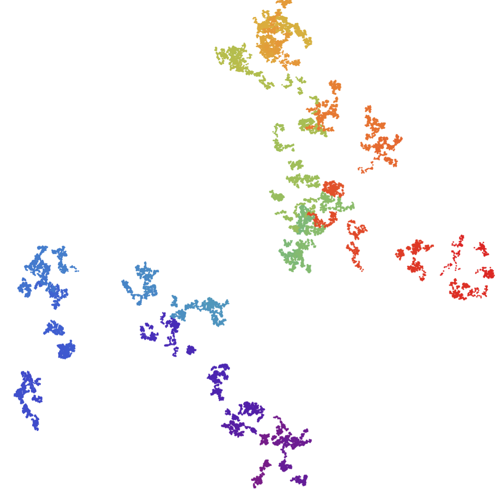

The paper's results on distinguishing Brownian images of sets and measures are formalised in Lean 4 over Mathlib, with LLMs drafting much of the code.
Abstract
Motivated by a question of Hochman, we investigate whether two deterministic time measures or time sets can be distinguished almost surely from a single planar Brownian image. Using rescaled correlation integrals, we give a criterion for mutual singularity of the laws of the image measures, even when the time measures have the same dimension. For self-similar time sets satisfying the open set condition, we also recover the natural occupation measure from the compact image. Together, these results allow us to distinguish lattice and non-lattice self-similar sets and their natural measures within this class. For a naturally parametrised family with two contractions, with fixed dimension, each parameter can be distinguished from all but finitely many others. If the dimension is sufficiently small, every distinct parameter can be distinguished. The results are formalised in Lean.
Problem
The question, posed by Hochman, is whether two deterministic time measures or time sets on [0,1] can be distinguished almost surely from a single planar Brownian image. This is hard when they have the same Hausdorff dimension.
Approach
Rescaled correlation integrals of the image measure define a normalised expected correlation profile. A four-point variance bound and Borel–Cantelli give almost sure concentration around this profile. Renewal theory and an injective Gaussian smoothing operator handle self-similar sets satisfying the open set condition. A Minkowski-type reconstruction recovers the natural occupation measure from the image set, and the results are formalised in Lean 4 over Mathlib.
Results
If the correlation profiles of two time measures differ asymptotically, the laws of their image measures are mutually singular. This distinguishes lattice from non-lattice self-similar sets and their measures. In a two-contraction family of fixed dimension, each parameter is distinguished from all but finitely many others, and from all others when the dimension is small.

Figure 1. Brownian images W(K_{p_{1}}) (left) and W(K_{p_{2}}) (right) of two time sets of the two-contraction family, coloured by time, for s=4/5 , p_{1}=2/5 , and p_{2}=1/2 .